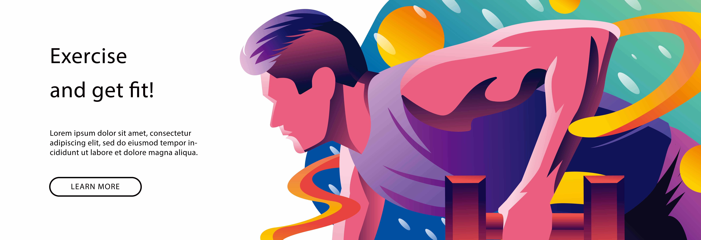
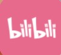
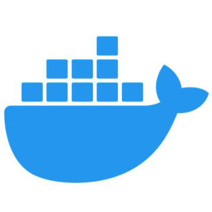

219970113李佳豪
源码
小游戏
作业
听歌
彩蛋

社区个人主页
 ビリビリ動画
bilibili主页
github
github托管平台
知乎
知乎主页
贴吧
贴吧主页
技术框架
jQuery
优秀的JavaScript代码库
LayUI
由职业前端倾情打造，面向全层次的前后端开发者，易上手开箱即用的 Web UI 组件库
Vue.js
构建数据驱动的web界面的渐进式框架
ElementUI
Element，一套为开发者、设计师和产品经理准备的基于 Vue 2.0 的桌面端组件库
Spring
一个轻量级的控制反转(IoC)和面向切面(AOP)的容器框架
MyBatis
MyBatis 是一款优秀的持久层框架，它支持自定义 SQL、存储过程以及高级映射
MyBatis-Plus
MyBatis-Plus 是一个 MyBatis 的增强工具，只做增强不做改变，为简化开发、提高效率而生
 Docker
Docker 可以让开发者打包他们的应用以及依赖包到一个轻量级、可移植的容器中
 jQuery
jQuery Vue.js
Vue.js MyBatis-Plus
MyBatis-Plus